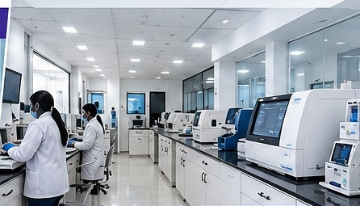
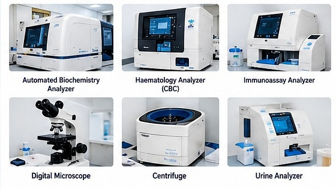

Haematology
Complete blood count (CBC), ESR and coagulation profile enquiries.
Enquire about a testHI-TECH LABORATORY · TALOD
Diagnostic testing with a focus on quality, clear reporting and patient care. Visit our laboratory or enquire about sample collection at home.

ABOUT HI-TECH
Hi-Tech Diagnostic & Pathology Laboratory provides diagnostic testing services in Talod, Gujarat.
From routine blood tests to health check-up enquiries, our focus is on organised testing, reliable reporting and convenient patient support. Our team can help you check test availability, preparation requirements and collection arrangements.
Find our laboratoryDIAGNOSTIC SERVICES
Speak with the laboratory to confirm your prescribed test, preparation and reporting time.
Complete blood count (CBC), ESR and coagulation profile enquiries.
Enquire about a testLiver, kidney and lipid profiles, along with electrolyte testing.
Enquire about a testTSH, T3, T4 and hormonal studies as advised by your clinician.
Enquire about a testEnquiries for infectious disease markers and prescribed serology tests.
Enquire about a testRoutine examinations and special analyses based on your prescription.
Enquire about a testContact the team for sample requirements and test availability.
Enquire about a testAsk about vitamin D, vitamin B12, iron studies, HbA1c and other prescribed tests.
INSTRUMENTS & FACILITIES
Diagnostic instruments and organised testing workflows support sample processing and reporting. Ask our team about the equipment and methods used for your test.

HEALTH CHECK-UP PACKAGES
Enquire about the packages below. The team will confirm current inclusions, availability and pricing.
A starting point for routine health screening.
Discuss your monitoring needs with your clinician.
A wider range of routine profiles and vitamin tests.
Check the right combination of tests for your needs.
Package selection should follow your clinician's advice. Ask the lab whether consultation or ECG is available separately.
HOME SAMPLE COLLECTION
Enquire about home sample collection in Talod and nearby areas. Our team will confirm coverage, appointment availability and any collection charges.
Enquire on WhatsAppCall or WhatsApp to discuss your prescribed tests.
Check your area, collection slot and preparation instructions.
The team will explain sample collection and how to receive your reports.
PATIENT INFORMATION
Instructions depend on the test. Confirm your requirements with the laboratory before your appointment.
Tell the team about medicines you take. Do not stop prescribed medication unless your clinician advises it.
Some tests require fasting; others do not. Ask the laboratory whether fasting is needed and for how long before your specific test.
Plain water is often permitted, but special tests may have different instructions. Follow the preparation advice given for your test.
Share your prescription, relevant previous reports and current medication information with the team. Ask about any special sample requirements.
Contact the laboratory to confirm the reporting time and delivery method for your test.
Please call +91 78018 01418 to confirm current opening hours and collection slots before visiting.
VISIT OR GET IN TOUCH
Call for test enquiries, package details, preparation instructions or home collection.
Search by laboratory name and address; confirm the location before travelling.
Confirm test availability, current charges, opening hours and any preparation needed.